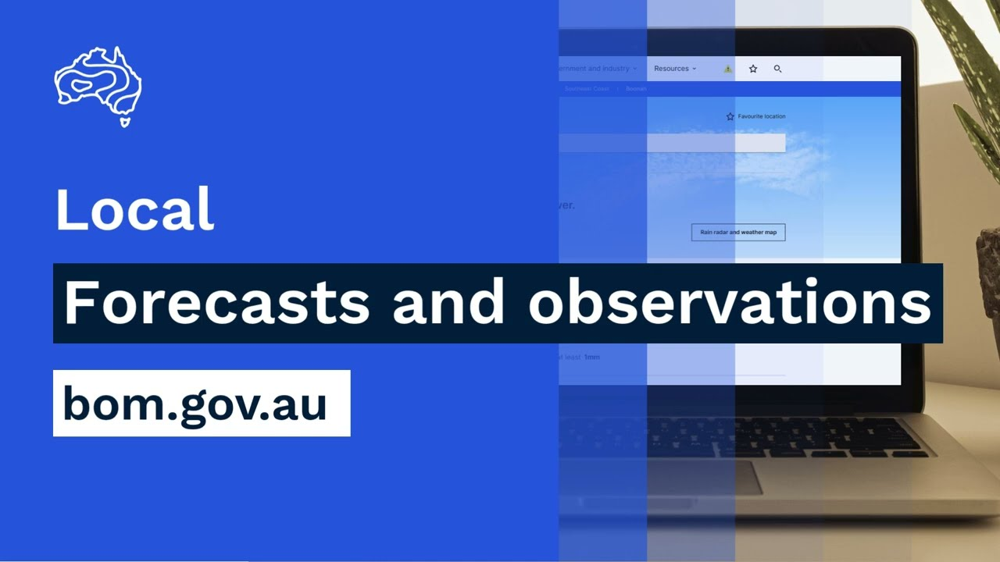

Learning purpose
Adjust a fictional work schedule, record the reason and communicate the change through the correct channel.
Task 9 · Lesson 4 of 4
Adjust a fictional work schedule, record the reason and communicate the change through the correct channel.
Learning purpose
Adjust a fictional work schedule, record the reason and communicate the change through the correct channel.
Success criteria
Learning boundary
Supplementary learning and formative practice only. Current RTO assessment, local procedures and authorised supervision control real work.

Weather matters through its interaction with a task, people, animals, access, equipment, materials and timing. The same forecast can have different consequences for work in an open paddock, a sheltered shed or a transport route.
Describe the exposure before proposing a change. This keeps reasoning specific and prevents a broad weather word such as hot or wet from becoming an unsupported stop-or-go rule.
A contingency is a planned alternative if stated conditions affect the original job. It might change timing, location, sequence, resources or task allocation, but the acceptable option and trigger come from the workplace plan and supervisor.
A learner can gather evidence, explain the possible impact and ask for confirmation. They should not invent a local emergency threshold, move animals, redirect vehicles or create a new operational method through a website response.
Weather can change after work begins, so a schedule needs review points connected to current updates and local observations. A plan that was reasonable at 7:00 am may need reconsideration when a warning changes or site conditions deteriorate.
The record should identify who reviews the information and how affected people receive the confirmed change. This makes monitoring a continuing part of work rather than a one-off check.
A useful report states the current source and time, local observation, exposed task, possible consequence, present work status and decision needed. It avoids dramatic language and does not hide uncertainty.
Closed-loop communication is important when a change affects several workers. The supervisor confirms the response, affected people receive the same message and the learner checks that the updated instruction is understood.
Fictional worked example
Observed evidence: At 11:40 am on 19 January 2027, a fictional orchard class is scheduled to move empty bins at 1:00 pm. A saved teaching forecast issued at 5:00 am shows increasing afternoon heat, while a class observation shows the unshaded route is already warmer than the morning. Decision and reason: Mia does not set her own temperature threshold or substitute a new task. Safe action: She reports the source times, local observation, exposed route and scheduled work to the supervisor. Result: After checking current Bureau information and the workplace plan, the supervisor moves the activity to an authorised sheltered learning task and sets a new review time. Next check or record: Mia records the confirmed change, who was told and the current source used.
A schedule record should show the original task, evidence considered, authorised decision, time of change, person confirming it, people notified and next review. This demonstrates why the plan changed without creating a private weather rule.
Use factual language and avoid blaming a source for uncertainty. Forecasts support decisions within their limits; the workplace is responsible for applying current information to its people and operations.
After the event, compare the information available at each decision point with the action actually taken. The goal is to improve source checks, timing, communication and contingency readiness, not to judge an earlier decision using information that only became available later.
A review can identify a missing update point or unclear handover for the supervisor to improve. It cannot establish competency or replace the RTO's authorised observation and assessment process.

External media loads only after you choose it.
Source-linked video
Why watch: Locate the authoritative evidence needed before documenting a fictional contingency.
Watch for: Where are current warnings shown, and which details would you record before changing a work plan?
Formative practice
Each option explains the consequence. These answers save only on this device.
Written application
Apply and keep a learning record
Use a teacher-provided dated schedule and saved weather update. Mark exposed tasks, draft one report to the supervisor and record the confirmed fictional change. Do not create a real emergency threshold or instruction.
Learning record: A supplementary-learning schedule annotation and closed-loop weather report.
Lesson responses and the activity are formative learning only. Formal sufficiency and competence remain with the current RTO process.
Next: return to the task hub and follow the teacher-confirmed assessment direction.
Source basis: AHCWRK210 Release 1 requirements to discuss preventative action, adjust work, monitor updates and complete records; NESA Weather focus-area task-impact concepts; authorised teacher-posted weather notes. Current Bureau and workplace sources control real contingencies.